• General Page
- Word Wrap Page
- Fonts Page
- Colors Page
- Print Options Page
• File Page
- Association Page
- Backup Page
- Syntax Page
- Filters Page
• Tools Page
- User Tools Page
- Macros Page
|
Preferences > General Page
| ↑ Top |
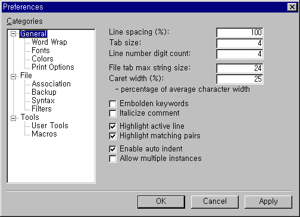
- Line spacing: Sets the spacing between two adjacent lines in screen and print pages. Line spacing is specified in percentage of line height.
- Tab size: Sets tab size used in documents.
- Line number digit count: Sets the size of line numbers displayed in left side of documents in screen and print pages.
- File tab max string size: Sets maximum string size of filenames displayed in the File Selection Tab. If a filename is longer than this size, it will be abbreviated into the size specified and an ellipsis will be appended at the end.
- Caret width: Sets width of the caret for Insert Mode in percentage of average character width. In Overwrite Mode, the width of the caret is 100% of the character width on which the caret is currently on, and is not changable.
- Embolden Keywords: Draws keywords in a document using bold character font. This option applies to both screen and print pages.
- Italicize Comment: Draws comment in a document using italic character font. This option applies to both screen and print pages.
- Highlight active line: Highlights active line by filling color inside and drawing a dotted box around it. You can specify the filling color of active line at Preferences > General > Colors Page.
- Highlight matching pairs: Highlights matching pairs by underlining both of the pairs when the caret is currently on one of them.
- Enable auto indent: If this option is turned on, Crimson Editor tries to indent the line of editing properly.
- Allow multiple instances: Allows multiple instances of Crimson Editor running at the same time.
|
Preferences > General > Word Wrap Page
| ↑ Top |
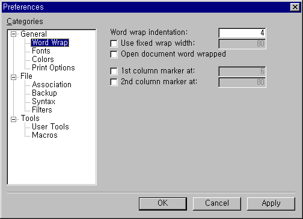
- Word wrap indentation: Sets the size of word wrapping indentation. When a line is word wrapped, the consecutive lines, that are not separated from the first line physically, will be indented by the size specified.
- Use fixed wrap width: If checked, word wrapping occurs at the specified position, otherwise it occurs at the right edge of a window.
- Open document word wrapped: Makes Crimson Editor turn on word wrapping feature automatically whenever a document is loaded.
- 1st & 2nd column marker at: Draws vertical dotted lines on screen at the specified position. Column markers are helpful sometimes especially when struggling with strictly formatted languages. (i.e. FORTRAN)
|
Preferences > General > Fonts Page
| ↑ Top |
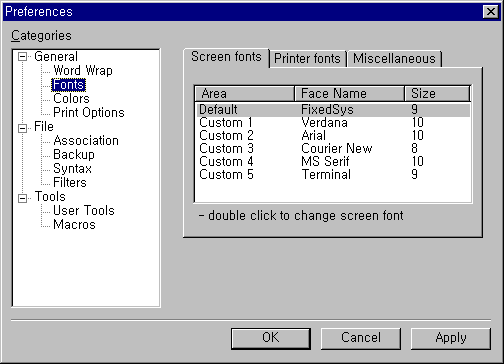
- This property page shows registered fonts used to draw documents in screen and print pages. Double clicking on a font item opens a Font Dialog Box to change the font. You can register your favorate fonts before you use it actually. Once after registering fonts, you can quickly switch between those registered fonts via View > Screen Fonts or View > Printer Fonts Menu.
|
Preferences > General > Colors Page
| ↑ Top |
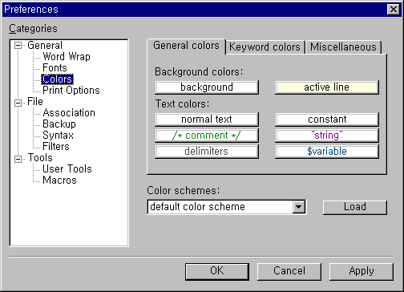
- This property page shows the colors to draw documents in screen and print pages. Clicking on a color item opens a Color Dialog Box to change the color of each item.
- Color schemes: Select one of those color schemes to load and apply predefined color scheme as a whole. There are four color schemes available.
- default color scheme
- light gray color scheme
- simplified color scheme
- reversed color scheme
|
Preferences > General > Print Options Page
| ↑ Top |
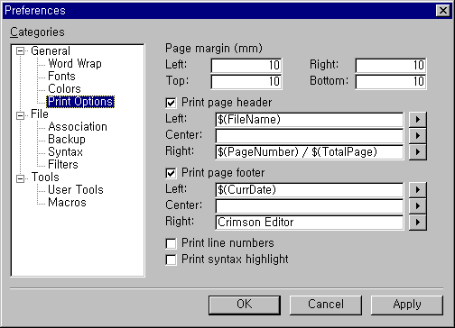
- Page margin: Sets the margin of print pages in milimeters.
- Print page header: Prints page header with the specified contents.
- Print page footer: Prints page footer with the specified contents.
- Print line numbers: Prints line numbers in left side of document contents.
- Print syntax highlight: Prints document contents in colors, otherwise it will be printed in black. This option is to be used with color printers.
|
Preferences > File Page
| ↑ Top |
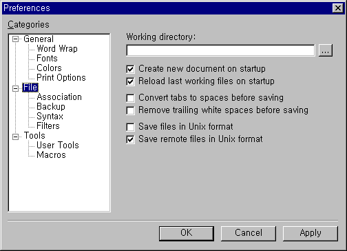
- Working directory: Sets working directory. When Crimson Editor start, the working directory is to be opened in the Directory Window. If no working directory is specified, the last explored directory is to be opened instead.
- Create new document on start up: If this option is set, Crimson Editor creates a new empty document on start up when there is no document to open.
- Reload last working file on start up: If this option is set, Crimson Editor reloads all the last working files opened in previous session on start up.
- Convert tabs to spaces before saving: If this option is set, Crimson Editor converts all the tabs in a document into spaces before saving the document.
- Remove trailing white spaces before saving: If this option is set, Crimson Editor removes all the trailing white spaces in a document before saving the document.
- Save files in Unix format: If this option is set, Crimson Editor saves a document padding each line in the document with LF only.
- Save remote files in Unix format: If this option is set, Crimson Editor saves a remote document padding each line in the document with LF only.
|
Preferences > File > Association Page
| ↑ Top |
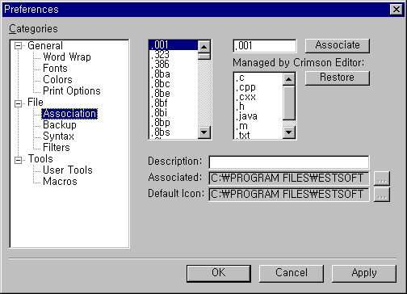
- Associate: Associates the given file extension with Crimson Editor. Once you associate a file extension with Crimson Editor, double clicking on a file item which has the specified file extension in the Window Explorer opens that file in Crimson Editor.
- Restore: Restores the file type association back into the original.
|
Preferences > File > Backup Page
| ↑ Top |
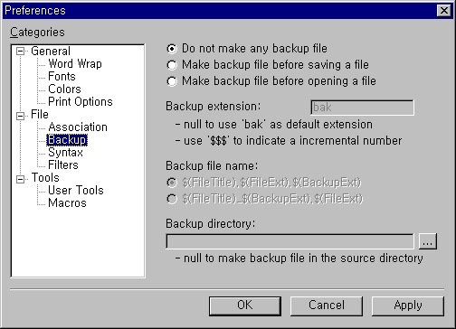
- This property page shows settings for how to make backup files. You can choose one of those backup strategy.
- Do not make any backup file.
- Make backup file before saving a file.
- Make backup file before opening a file.
- Backup extension: Specifies backup file extension.
- Backup file name: Specifies backup file name.
- Backup directory: Specifies the directory where backup files to be made. Do not set this value to make backup files in the same source directory.
|
Preferences > File > Syntax Page
| ↑ Top |
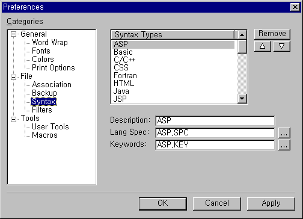
- This property page shows a list of registered syntax types which is to be displayed in Document > Syntax Type Menu. You can customize the list of syntax types by adding, moving or deleting each item.
- To register a new syntax type, two syntax definition files are needed. One is a language specification file, and the other is a language keywords file. If you do not have syntax definition files for your favorate language, visit Homepage of Crimson Editor to check if someone has posted one or to read documents about how to make custom syntax definition files.
|
Preferences > File > Filters Page
| ↑ Top |
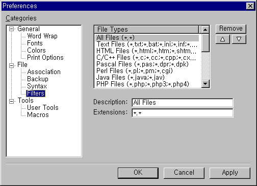
- This property page shows a list of registered file filters which is used in Open dialog box, Save As dialog box, Open Remote dialog box and Save As Remote dialog box. File filters are also used in the Directory Window. You can customize the list of file filters by adding, moving or deleting each item.
|
Preferences > Tools Page
| ↑ Top |
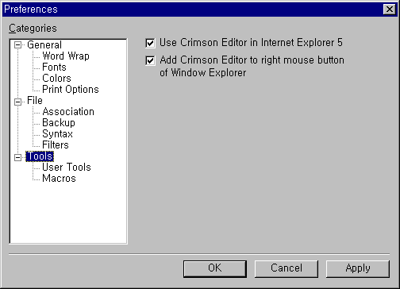
- Use Crimson Editor in Internet Explorer 5: Sets Crimson Editor as default source editor for Internet Explorer. If you select 'View Source' popup menu item of Internet Explorer, the source file will be opened in Crimson Editor.
- Add Crimson Editor to right mouse button of Window Explorer: Adds 'Crimson Editor' menu item to the popup menu of Window Explorer. Select file item(s) in Window Explore, click right button of mouse, and select 'Crimson Editor' then selected file(s) will be opened in Crimson Editor.
|
Preferences > Tools > User Tools Page
| ↑ Top |
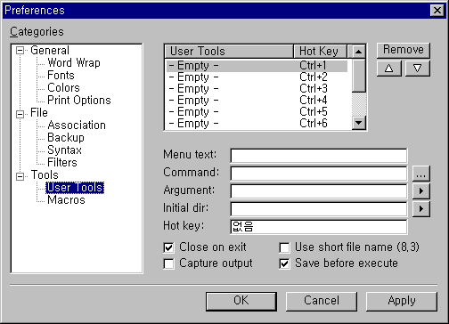
- This property page shows registered user tools that can be executed in Crimson Editor by pressing a single hot-key. Users can register any command that can be executed in Windows system to automate their work.
- Menu text: Sets string to be displayed in Tools menu.
- Command: Specifies a command to execute.
- Argument: Sets command line argument.
- Initial dir: Sets Initial directory where to execute this command.
- Hot key: Sets hot key to invoke this command.
- Close on exit: If the command is a DOS application, this option will close the MS-DOS shell window immediately after executing this command.
- Capture output: Redirects the output from the command into the Output Window of Crimson Editor.
- Use short filename (8.3): Converts long filename to short filename in the argument passed to the command.
- Save beore execute: Saves the document first before executing this command.
|
Preferences > Tools > Macros Page
| ↑ Top |
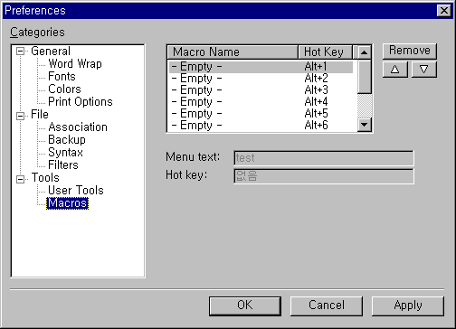
- This property page shows registered macros. Macro is a sequence of keyboard actions recorded by users to do their repeatative work by pressing a single hot-key. In this page, users can rename, reposition, remove each macro items.
- Menu text: Sets string to be displayed in Macros menu.
- Hot key: Sets hot key to invoke this macro.
|